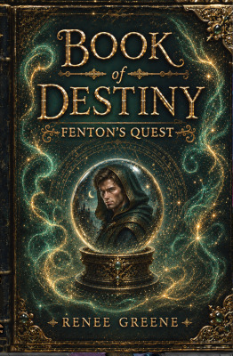
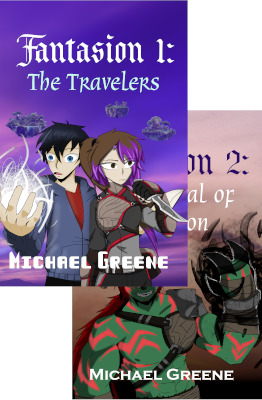
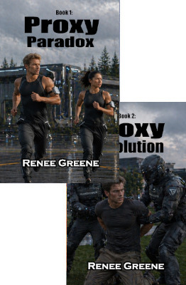
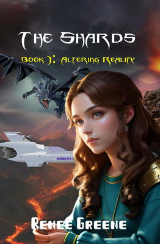
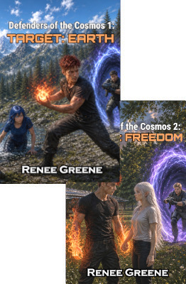
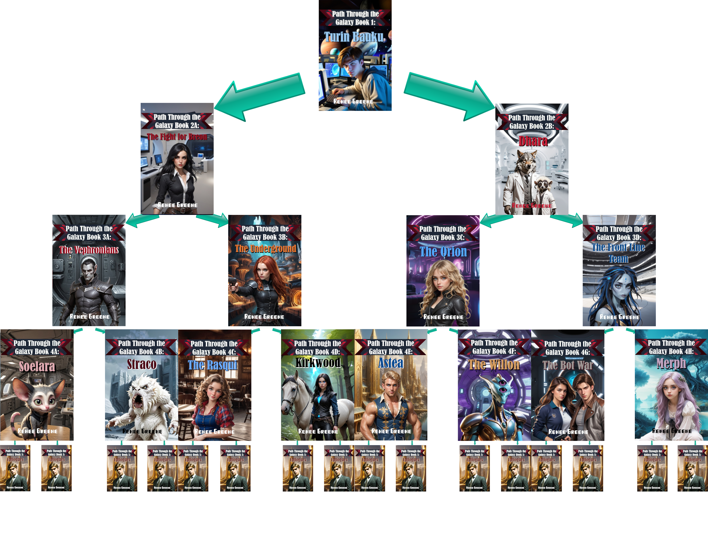
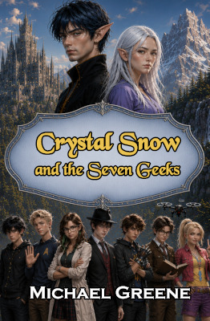
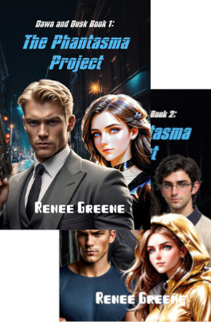

Book of Destiny
So unique! Nerds will love the cleverness!
When Fenton, a very skilled thief, finds a magical book following him around, his life changes as he's practiacally forced into an adventure. This book was a challenge to write, as the author of the book that follows him around is a character in the book and Book of Destiny is word for word the book following him around. To make it worse, Fenton has to defeat the enemy when his every move is watched. That's almost impossible, but the way he does it is clever, so clever. Nerds love it.

Fantasion
Written by a Nerd, and Nerds will Love it. So will Everyone Else.
This is a huge twist on an isekai, one where the hero can go between worlds, and must fix both worlds to save his fellow traveler from sure death. Nerds who love in depth world buidling, creative races, fascinating plots, and great characters will love this book.

Eubos System
A must read for Sci-fi and RPG nerds: Developed through active role-playing!
This Epic sci-fi was role-played, where everyone came up with characters. Each night, the author would tell them what was happening, and they'd react, like playing an RPG without dice. Of course, the author made some adjustments for the integrity of the story, but often wrote down banter as close to word for word as she can get it. Nerds, and everyone else, will love the characters, and the plot won't disappoint. These books are musts for sci-fi loving nerds!

Proxy
Such a fascinating premise that nerds love.
Have you ever wished someone else could sleep for you, or exercise for you, or study for you? In Proxy Paradise, people can, but that doesn't come without problems. Proxy is sci-fi meets adventure, meets dystopia. Interestingly enough, the idea came from our resident nerdy night owl and gamer, the one who programs the website. Wouldn't it be great to have someone sleep for you, so you could stay up and finish the game?

Shards
Great Book for Science/Physics Nerds!
The world of Shards was shattered, and the land and people changed. Each shard of land has some law of physics that is broken in it -- entropy, impulse, gravity, probability,... Everyone born in a shard has magic to compensate for the anomaly, but only a few can use their magic of their shard in other shards. It's up to these few so solve the mystery of the shards and stop the destruction that is inevitable. Smart nerds will love the world!

Rejected
Like Nothing You've Ever Seen Before
Nerds will love this story just for the concept -- the land of rejected characters and settings. It's an eclectic world with eclectic characters, everything from grim dark to fantasy to sci-fi, to Princess Cupcake. With a land so varied and characters so diverse, the story is fun and exciting, but still up against such great evil that there's plenty of intensity. This is a must read for almost every type of nerd.

The CAMO Series
Dystopia meets Superhero with Epic Battles!
Only a few people in major cities survived the war due to chemical attacks, and those people would never be the same. Some admired their powers, but most feared them. Yet, without them, people would be murdered by those supposedly protecting them and beast would run rampant through the city. Nerds will love everything from Eccentrics, who plays epic battle music when they fight, to creative characters, to the epic fights.

Defenders of the Cosmos
Urban Sci-Fi that Geeks Out!
Aliens exist and are being hunted. Yet, they are the only people who can save earth. This story has fun with wormholes, the Sci-Fi club, aliens, and an enemy that wants to destroy the world. Nerds love the mix of high school, aliens, and high tech.

Path Through the Galaxy
Choose your Sci-Fi Adventure, in a way you've never seen Before!
So many choose your path books just lead back to the main story. With this twist, every book has a major choice at the end, one that leads to a vastly different adventures, so buckle up for an adventure through the galaxy that you navigate your way through. Read all the different choices, and find out what all can happen to the brilliant, nerdy hero!

Crystal Snow and the Seven Geeks
Geeks is in the Name!
This is a modern day Snow White style story, where Crystal Snow, a half-fairy, needs the help of seven geeks from the science club to stop a fairy who wants to rid the realms of half-fairies. Where this is a fairy tale, it is full of geeks and humor nerds will love.

Dawn and Dusk: The Phantasma Series
Dawn and Desk must hide their Super Hero Identies for Good Reasons.
Dawn and Dusk are super heroes from different countries, so when they have to work together, they seriously can't tell each other their identies or they have to kill the other. This is a super hero story has great characters, and all nerds will love the techno guys in the chairs.